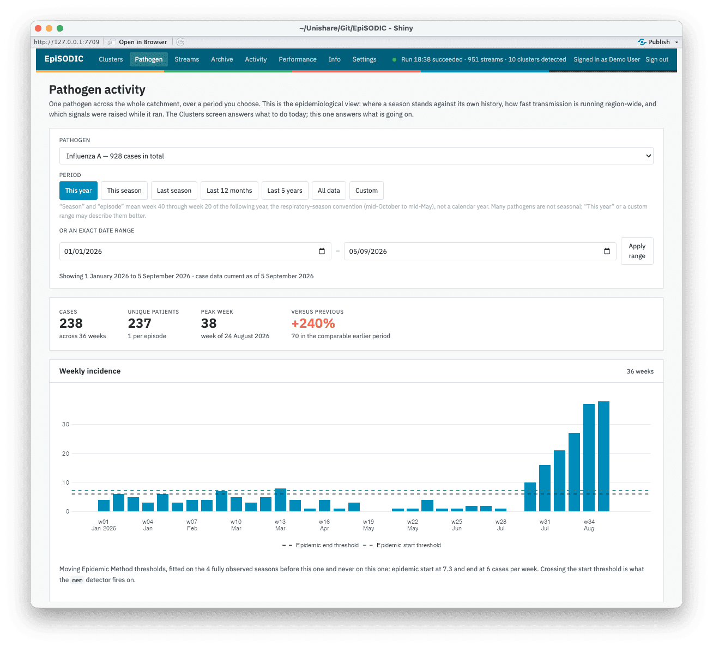
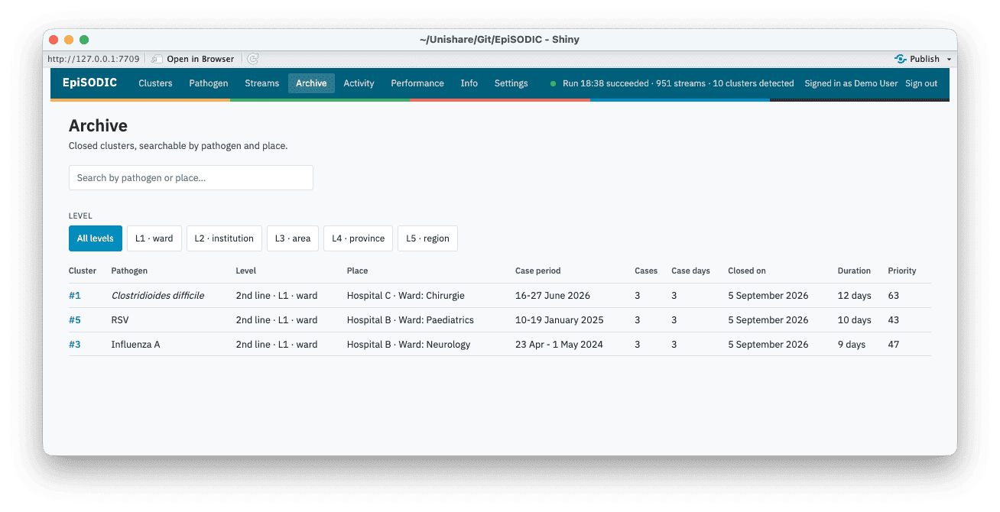

An early warning system for infectious disease outbreaks, built to run in any laboratory, in any country.

A cluster dossier - case stats, status trajectory, an automatically generated interpretation of the evidence, the epidemic curve, and the classification panel, alongside the rail of open clusters.
Statistical methods for spotting an unusual rise in infections are not new. The Farrington algorithm and its successors have run at national public health institutes since the early 1990s, and R has long had a solid reference implementation in the surveillance package. What has been missing is not a better method, but a system that actually runs one, day after day, in an ordinary laboratory.
An algorithm on its own only produces a single alarm at a single point in time. It does not remember that the alarm it raised yesterday and the one it raises today are the same ongoing event. It does not notice that a signal at ward level and a signal at hospital level are the same outbreak seen at two altitudes, so without reconciliation, one outbreak becomes several unrelated alerts competing for attention. It does not record why an epidemiologist decided a statistically significant blip was clinically irrelevant, or why a real cluster was eventually closed. And it certainly does not write a report an infection prevention nurse can act on.
EpiSODIC is that system. It takes a stream of laboratory-confirmed infections and carries it all the way from statistical detection through reconciliation into persistent clusters, structured epidemiologist assessment with a full audit trail, to an outbreak report ready for clinical colleagues, fully automated and running on a schedule of your choosing.
- Detects. Combines the Farrington method with rule-based detectors for pathogens too rare for a statistical baseline, and the Moving Epidemic Method for seasonal ones such as influenza and RSV, applied automatically across every ward, institution, and region in your data.
- Reconciles. Recognises the same signal across repeated runs and across geographic levels, so one outbreak stays one dossier, not a pile of restatements.
- Assesses. Gives epidemiologists a dossier per cluster with an automatically generated interpretation of the evidence, and records every judgement made on it, kept as a full, immutable audit trail.
- Reports. Turns a confirmed cluster into an outbreak report for clinical microbiologists and infection prevention practitioners, rendered in the language your colleagues read.
- Notifies. Pushes new clusters to your team the moment they arise, by email, Microsoft Teams, Slack, or an ntfy server.
- Adapts. Works against any laboratory information system, any coding system, any administrative geography. Nothing about how it interprets your data is hardcoded.
Set-up takes minutes, and no data ever leaves your own infrastructure. The dashboard and its outbreak reports are available in English, (Modern Standard) Arabic, Dutch, French, German, Hindi, Mandarin Chinese, and Spanish.
This software is 100% free and open-source, and only allows for local storage of data and configurations. This software is perfectly safe, and all code is open to anyone willing or required to assess.

The Pathogen screen - weekly numbers of cases, reproduction number, with geographic and demographic distribution.

The Archive screen - previously detected clusters.
Installation
# install.packages("remotes")
remotes::install_github("certe-medical-epidemiology/EpiSODIC")See it work, right now
No data, no credentials, no configuration - one call runs the whole system against bundled synthetic data:
EpiSODIC::episodic_demo()This creates a temporary database, runs one detection cycle, provisions a demo epidemiologist account (printed to the console), and opens the app. Pass launch = FALSE to skip opening the app and just get a populated database path back, e.g. for scripting.
Documentation
Everything past “what is this and how do I try it” lives in the package’s vignettes, so it stays organised by topic instead of one long page:
| Read this… | …for |
|---|---|
| Overview | What EpiSODIC does: the Clusters and Pathogen screens’ two altitudes, and the Performance, Archive, Streams, Activity and Info screens around them. |
| Getting your data in | The case data contract - every column, what’s optional, and episodic_check_cases()/episodic_check_denominators()/episodic_check_institution_activity() to check your extract before anything runs. |
| Deployment | Standing up a real instance: scheduling, accounts, the database backend, custom report templates. |
| Environment variables | The full EPISODIC_* reference table. |
| Detection and reconciliation | How a laboratory result becomes a dossier: the four detectors, reconciliation, and suppression. |
| FAQ | Answers to the questions that come up most often when getting started. |
Building the package locally (or browsing offline) works the same way: vignette(package = "EpiSODIC") lists all of them, and vignette("data-format", package = "EpiSODIC") (etc.) opens one.